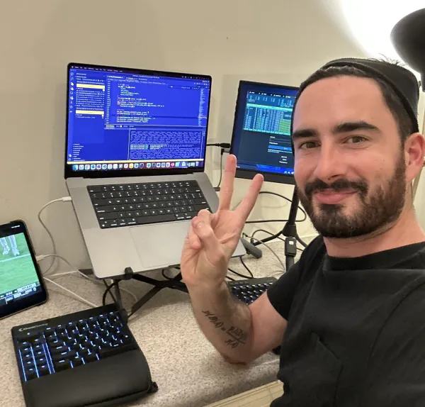

Hi, I'm David
I specialize in AI agents and agentic frameworks - building autonomous systems that think and act independently. As an AI/ML engineer with expertise in LLM fine-tuning and generative AI, I create cutting-edge agentic systems that push the boundaries of what's possible with autonomous AI.
Browser Fingerprinting
Check what data leaks from your browser to websites
This Wine Does Not Exist
Using GPT-2 and StyleGAN to generate fake wines
My GitHub Page
Check out samples of my code
My Blog
A few scribbles on Medium